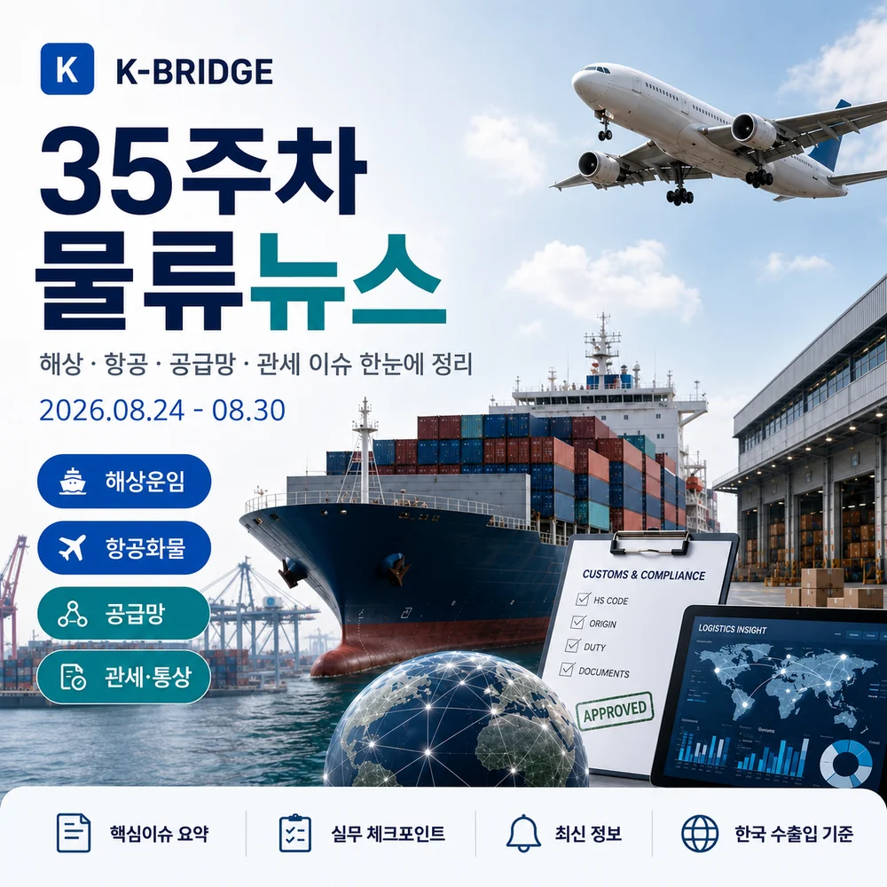
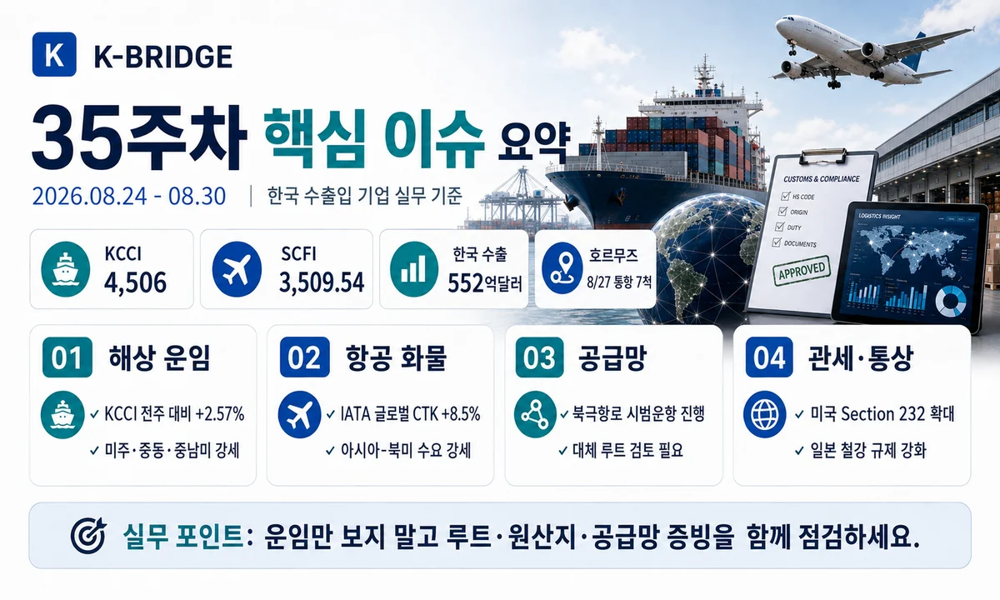
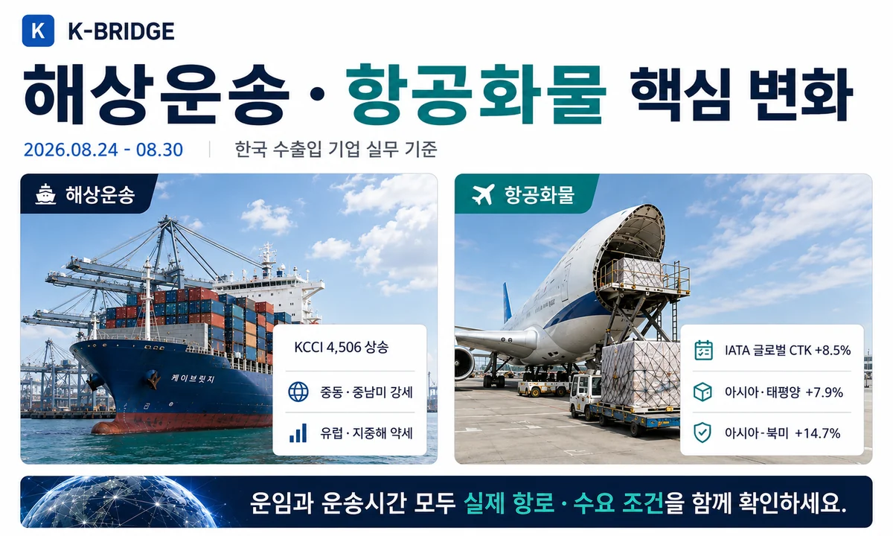
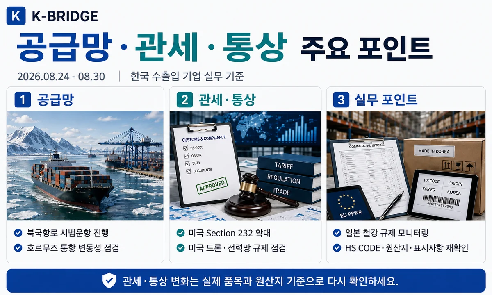
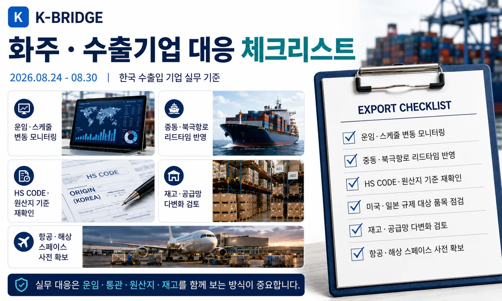

핵심 요약
35주차는 KCCI 4,506 재상승, 8월 1~20일 수출 552억달러(+56.0%), 호르무즈 통항 변동성, 파나마 운하 9월 통항량 축소, 미국의 Section 232·전력망 규제와 일본의 한국산 철강 수입규제 확대가 핵심입니다. 해상운임만 볼 것이 아니라 실제 항로·원산지·품목별 통상규정을 함께 확인해야 합니다.

35주차 시장 한눈에 보기
한국발·상하이발 컨테이너 운임은 같은 주에 상승했지만 유럽·지중해는 하락해 항로별 차별화가 뚜렷했습니다. 동시에 호르무즈와 파나마 운하의 통항 리스크, 미국·일본의 품목별 수입규제가 확대돼 운임·리드타임·통관비용을 분리해서 관리해야 하는 구간입니다.
| 항로·지표 | 35주차 기준 | 전주 대비 | 실무 해석 |
|---|---|---|---|
| KCCI 종합 | 4,506 | +2.57% | 미주·중동·중남미 상승 |
| 미주 서안 | $7,095/FEU | +2.74% | 선사별 스페이스·Free Time 재비교 |
| 미주 동안 | $10,311/FEU | +3.30% | 파나마 운하 통항 축소까지 점검 |
| 유럽 | $4,602/FEU | -2.93% | 지수 하락, 실제 경유·일정 확인 |
| 중동 | $8,459/FEU | +5.16% | 호르무즈·War Risk 별도 확인 |
지표 기준: KCCI는 한국해양진흥공사의 부산발 40피트 컨테이너 현물운임 지수입니다. 실제 운임은 선사·출항일·장비·Free Time·전쟁위험 할증에 따라 달라질 수 있습니다.
해상운송·글로벌 해상 리스크
KCCI 4,506 - 미주·중동·중남미가 상승 주도
한국해양진흥공사 8월 24일 KCCI는 4,506으로 전주 4,393 대비 113포인트(2.57%) 상승했습니다. 미주 서안 7,095(+2.74%), 미주 동안 10,311(+3.30%), 중동 8,459(+5.16%), 중남미 동안 7,149(+7.07%), 중남미 서안 6,145(+11.10%)로 올랐습니다. 반면 유럽은 4,602(-2.93%), 지중해는 5,423(-3.35%)로 조정돼 항로별 차이가 뚜렷했습니다.
SCFI 3,509.54 - 5주 연속 상승, 미동안 1만달러선 상회
8월 28일 SCFI는 3,509.54로 전주 대비 99.91포인트(2.93%) 상승했습니다. 상하이발 미주 서안은 FEU당 6,940달러, 미주 동안은 10,046달러로 올랐고 유럽·지중해는 하락했습니다. 부산발 KCCI와 상하이발 SCFI가 함께 오른 만큼 9월 초 미주향 단기 스팟 화물은 선사별 실운임을 다시 확인하는 것이 필요합니다.
파나마 운하, 9월 통항량 축소 예고 - 미동안 리드타임 변수 확대
파나마 운하청은 강수량 감소에 대응해 9월 4일부터 일일 통항량을 34척, 9월 15일부터 32척으로 줄이는 추가 조치를 발표했습니다. 8월 29일에는 Neopanamax 예약 규정을 일시 조정해 고객의 슬롯 활용 유연성을 높이는 조치도 공지했습니다. 아시아-미동안·중남미·LNG/LPG 관련 화주는 예약 슬롯과 대기시간 변화를 함께 모니터링해야 합니다.
호르무즈 통항 7척 - 최근 10일 평균 15척 크게 하회
Reuters가 Kpler 자료를 인용한 8월 28일 보도에 따르면 8월 27일 호르무즈 해협을 통과한 원자재 운반선은 7척으로 전일 17척, 최근 10일 평균 15척보다 낮았습니다. 전면 폐쇄로 단정할 상황은 아니지만 일별 통항량과 통항 승인·보험 조건의 변동성이 커 중동 연계 선적은 War Risk와 ETA 버퍼를 항차별로 확인해야 합니다.
한국 북극항로 시범운항 진행 - PanStar Acro 실운항 데이터 축적
2,758TEU급 PanStar Acro는 8월 22일 부산을 출항해 약 40~45일 일정의 북동항로 시범운항을 진행 중입니다. 35주차는 실제 북극항로 항해가 진행된 첫 주로, 빙해·기상·보험·러시아 연안 제재 리스크와 상업성을 실운항 데이터로 검증하는 단계입니다. 당장 모든 유럽향 화물이 이용 가능한 정기 서비스로 보기보다 장기 대체항로 실증으로 이해하는 것이 적절합니다.

항공화물·고부가 화물 수요
인천공항 7월 국제화물 269,402톤 - 전년 대비 5.1% 증가
인천국제공항 통계 기준 2026년 7월 화물 처리량은 269,402톤으로 전년 동월 대비 5.1% 증가했습니다. 도착 137,662톤, 출발 131,740톤으로 반도체·전자부품·고부가 화물 중심의 항공수요 기반이 견조합니다.
IATA 6월 글로벌 CTK +8.5% - 아시아·북미 +14.7%
IATA 최신 공식 월간 자료에서 6월 글로벌 항공화물 수요는 전년 대비 8.5%, 국제선은 9.6% 증가했습니다. 아시아·태평양 항공사는 7.9% 증가했고, 교역로별로 아시아-북미 +14.7%, 유럽-아시아 +7.1%, 아시아 역내 +7.2%를 기록했습니다. 반면 유럽-중동은 -41.1%, 중동-아시아는 -4.1%로 중동 리스크의 영향이 나타났습니다.
한국 수출입·공급망 동향
8월 1~20일 수출 552억달러 - 전년 대비 56.0% 증가
관세청 잠정치에서 8월 1~20일 수출은 552억달러로 전년 대비 56.0% 증가했고 수입은 412억달러(+19.0%), 무역수지는 140억달러 흑자를 기록했습니다. 같은 기간 반도체 수출은 260억달러로 1~20일 기준 역대 최대였습니다.
7월 기업규모별 수출 모두 증가 - 대기업 +90.7%, 중소 +17.9%
관세청 8월 26일 자료에서 7월 전체 수출은 약 990억달러(+63.0%)였습니다. 대기업 744억달러(+90.7%), 중견기업 127억달러(+8.7%), 중소기업 117억달러(+17.9%)로 모든 기업규모에서 수출이 증가했습니다.
16개 광역지자체 수출 모두 증가 - 2021년 이후 5년 만
관세청 8월 28일 자료에 따르면 2026년 1~7월 전국 16개 광역지자체의 수출이 모두 전년 동기 대비 증가했습니다. 경기 1,954억달러, 충남 1,163억달러로 반도체 거점의 증가폭이 컸고, 반도체를 제외한 수출도 모든 지역에서 증가했습니다.
말레이시아산 콘덴세이트 FTA C/O 184일 → 45일
관세청은 말레이시아 당국과 협의해 석유화학 원료인 초경질유 콘덴세이트의 FTA 원산지증명서 발급 소요기간을 약 184일에서 45일로 단축했습니다. 사후환급 대기와 자금 부담을 줄이고 중동 이외 조달선 활용을 촉진한다는 점에서 공급망 다변화에 직접적인 실무 효과가 있습니다.

관세·통상·해외 규제
미국 Section 232 확대 - 완제품뿐 아니라 파생제품·부품 범위 확인
한국무역협회는 8월 26일 미국의 Section 232 조치가 전략산업을 중심으로 확대되고 있으며 품목별 관세·최저가격·수입규제가 세분화되고 있다고 분석했습니다. 미국향 화주는 완제품만 볼 것이 아니라 파생제품·부품의 HTS 적용범위와 수입자 신고 책임까지 확인해야 합니다.
미국 전력망 국가비상사태 - ESS·변압기 공급망 증빙 중요
미 백악관은 8월 26일 Bulk-Power System 보안을 위한 국가비상사태 행정명령을 발표했습니다. 외국산 전력망 장비 가운데 안보위험이 있다고 판단되는 거래를 금지하거나 조건부 허용할 수 있으며 장비뿐 아니라 중요 소프트웨어·디지털 기능도 범위에 포함될 수 있습니다. 한국이 일괄 금지국으로 지정된 것은 아니지만 ESS·변압기·인버터 수출기업은 부품 원산지와 하위 공급사, 소프트웨어·원격접속 구조를 문서화할 필요가 있습니다.
미국 드론 Section 232 관세 9월 3일 발효
미국의 UAS 조치는 9월 3일부터 일부 무인항공기·도킹스테이션·핵심부품에 100%, 일부 25kg 이하 UAS에 25% 관세를 적용합니다. 한국 등 일부 파트너에는 조건을 충족할 경우 별도 세율 구조가 적용될 수 있으므로, 한국산이라는 이유만으로 일괄 세율을 가정하지 말고 Annex·HTS·핵심부품 원산지 인증요건을 미국 수입자와 확인해야 합니다.
일본, 한국산 철강 수입규제 확대 - 잠정 AD 최대 38%
한국무역협회 8월 26일 분석에 따르면 일본은 한국·중국·대만산 철강제품을 중심으로 반덤핑 조사를 확대하고 있습니다. 한국산 용융아연도금강판에는 최대 38% 수준의 잠정 반덤핑관세가 부과됐고 열연·냉연강판으로 조사대상이 확대되고 있습니다. 4월부터 우회방지제도도 시행돼 HS CODE·생산공정·원재료 원산지를 계약 전 점검해야 합니다.
통상 주의: 미국 Section 232와 일본 반덤핑 조치는 제품명만으로 세율을 판단할 수 없습니다. HTS/HS CODE, 원산지, 파생제품 범위, BOM, 생산공정, 수입자 인증요건을 실제 품목 기준으로 확인해야 합니다.
이번 주 추가 물류 동향

화주·수출기업 대응 체크리스트
- 해상운송: 미주·중동·중남미는 선사별 실제 운임, 장비, Free Time을 다시 비교합니다.
- 파나마 운하: 미동안·중남미·가스선은 9월 슬롯 축소에 따른 예약·대기시간을 확인합니다.
- 호르무즈: War Risk, 통항 승인, 우회 가능성, ETA 버퍼를 항차별로 반영합니다.
- 항공화물: 반도체·전자부품 등 긴급화물은 메인 편과 대체편을 동시에 확보합니다.
- 미국 수출: Section 232 대상 여부, 파생제품·부품 범위와 공급망 원산지 증빙을 확인합니다.
- 일본 수출: 철강류는 AD 대상·HS CODE·생산공정·원재료 원산지·우회방지 규정을 확인합니다.
- 원산지·통관: Invoice, C/O, BOM, 제품·포장 라벨의 품명·원산지 정보가 일치하도록 준비합니다.
- 공급망: 중동 의존 조달품은 말레이시아 등 대체 조달선의 FTA 혜택과 통관 소요일수를 함께 계산합니다.
7. 자주 묻는 질문
Q. 2026년 35주차 KCCI는 얼마인가요?
Q. 호르무즈 해협이 폐쇄된 상태인가요?
Q. 한국산 드론은 미국 수입관세가 모두 15% 이하인가요?
운임·통항·관세·원산지를 한 번에 확인하세요
케이브릿지는 해상·항공·통관·국내운송을 연결해 항로별 운임과 선복, 원산지·관세 조건, 도착 리스크를 함께 검토합니다.